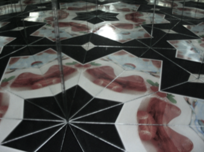
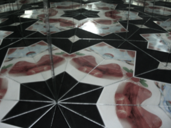
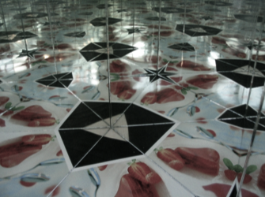
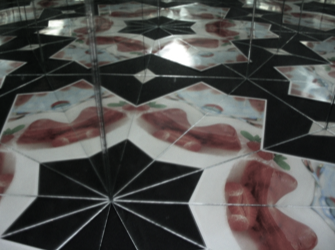

Het is ook mogelijk om drie spiegels, die loodrecht op een vlak staan, te schikken als de zijden van een driehoek, waarbij iedere hoek tussen twee spiegels een deler van 180° is. Er zijn drie mogelijkheden voor de hoeken van zulke driehoek:
Dit volgt uit het feit dat de som van de hoeken in een driehoek altijd 180° is.
Op deze manier verkrijgen we een zogenaamde kaleidoscoop, die een patroon voortbrengt dat het hele vlak naadloos zal vullen.
In de simulatie aan de rechterkant kan je zo'n reflectiepatroon genereren. Door de grote schuifknop te verplaatsen, controleer je hoe vaak het spiegelbeeld herhaald wordt. Door de groene en witte punten te bewegen, beïnvloed je de posities van het gereflecteerde object en de kaleidoscoop.
Tip: Je vindt meer uitleg over reflecties en kaleidoscopen in de app iOrnament voor iPhone en iPad. Je kan er ook je eigen ornamenten maken.
Link: www.science-to-touch.com/iOrnament
|


|
Een blik in een echte kaleidoscoop.